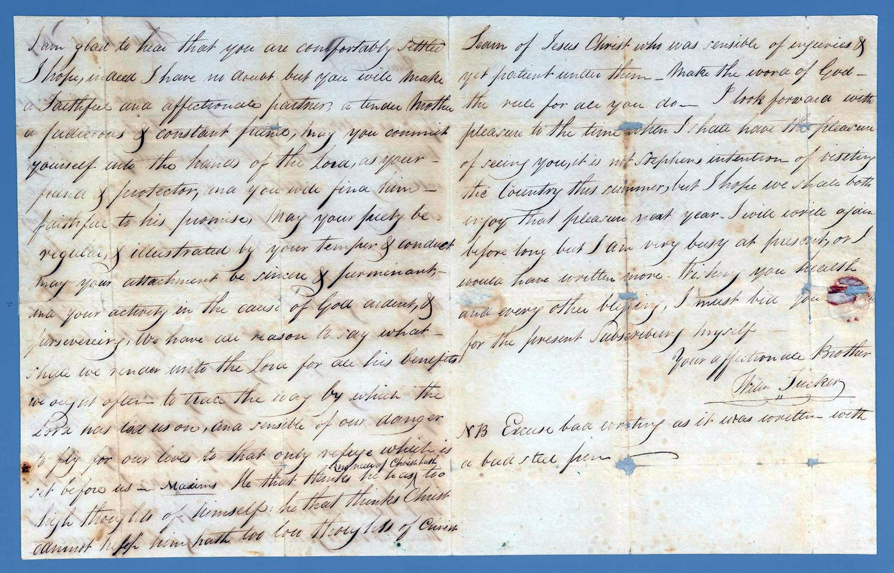

London, September 1827
Sarah had married and settled. Her brother William, unmarried and pious in London, sent her a book of religious tracts and a letter of tender, high-minded good wishes.
He writes of an author he admired — Legh Richmond, dead only months before — and of the hope of seeing his sister again.
Accept of it as a token of regard from a Brother who will ever have your interest at heart.
Addressed to Mrs Bucknall at Ebley, near Stroud.
The reading is given first as written, then in plain modern paragraphs. Dotted words are uncertain; square brackets mark readings to confirm.
First page
In plain reading
London, 11th September 1827
Dear Sister,
I have sent you a small book — accept of it as a token of regard from a brother who will ever have your interest at heart. You will find it very interesting; and although you may have read The Dairyman's Daughter before, perhaps you may never have read The Negro Servant, and the other tracts contained in this book.
They were written by the Rev'd Legh Richmond, and are circulated far and wide. This eminent servant of the Lord departed this life on 8 May 1827 — beloved by all when living, and sincerely regretted when removed by death, as you will find if you look in the Evangelical Magazine for June, page 204. He generally came to London once a year; I was in hopes that I should have had an opportunity of hearing him, but he is gone to another and a better world.

Second page
In plain reading
I am glad to hear that you are comfortably settled, and I hope — indeed I have no doubt — but you will make a faithful and affectionate partner, a tender mother, a judicious and constant friend. May you commit yourself into the hands of the Lord, as your guard and protector, and you will find him faithful to his promise. May your piety be regular, and illustrated by your temper and conduct; may your attachment be sincere and permanent, and your activity in the cause of God ardent and persevering.
I look forward with pleasure to the time when I shall have the pleasure of seeing you. It is not Stephen's intention to visit the country this summer, but I hope we shall both enjoy that pleasure next year. I will write again before long, but I am very busy at present, or I would have written more. Wishing you health and every other blessing, I must bid you for the present.
Subscribing myself, your affectionate brother, Wm Tucker.
N.B. Excuse bad writing, as it was written with a bad steel pen.
A note on this letter
The hand is clear and the ink has held, so this letter reads more plainly than most in the collection. The few uncertain words are marked; the names and dates check out against the historical record — the Rev'd Legh Richmond, author of those exact tracts, did die on 8 May 1827.
It is a small window onto the family Sarah came from: devout, book-loving, close. Her brother William, the writer of many of these letters, was an unmarried man in London who signed himself, in another letter, “an old Bachelor who loves celibacy.”
Image reproduced from State Library Victoria, PAC-10009902. Reproduction is subject to the Library's permission and conditions of use.